E · 账户、隐私与内容安全
Whisker Commons / iOS 26 · 设计稿 · 合成示例内容
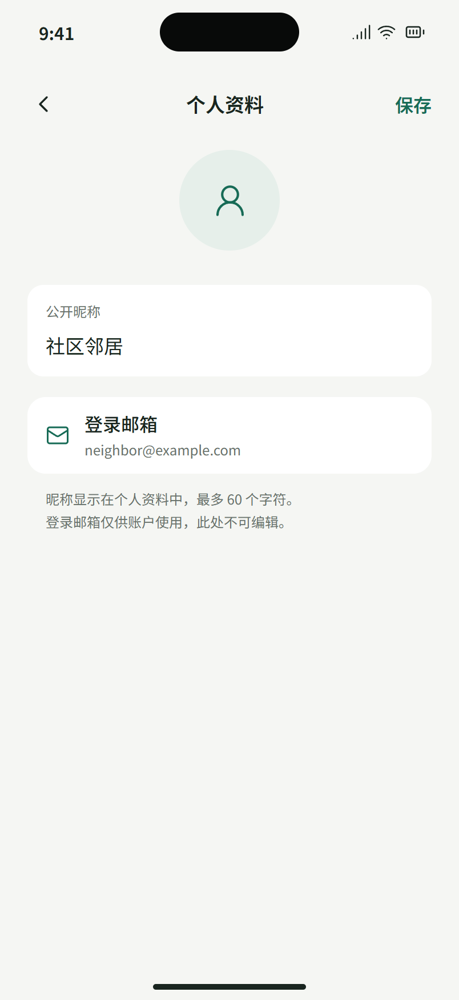
E01 · 编辑个人资料 / 统一表单
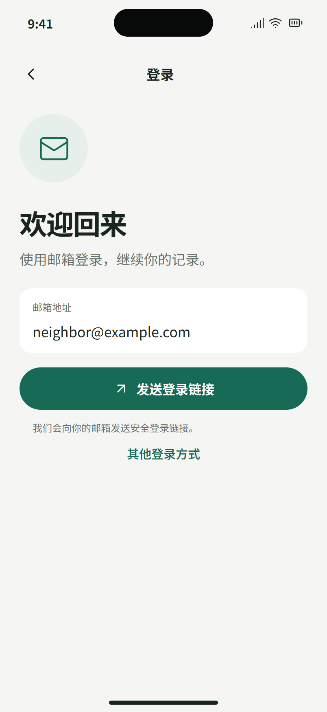
E02 · 登录 / 邮箱链接
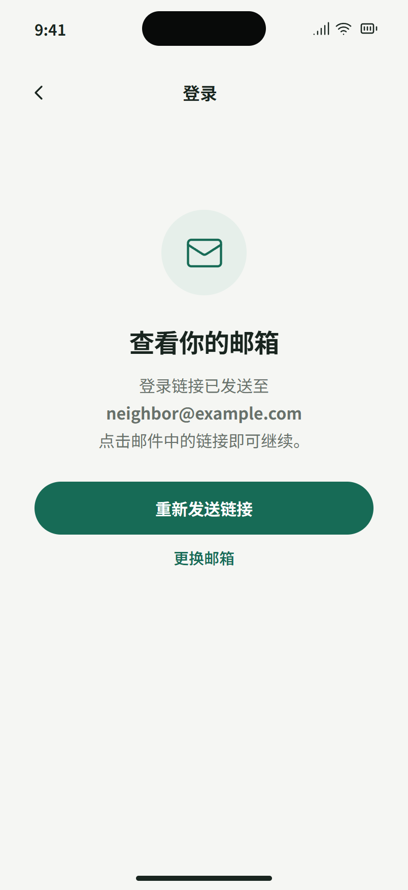
E03 · 登录链接 / 查看邮箱
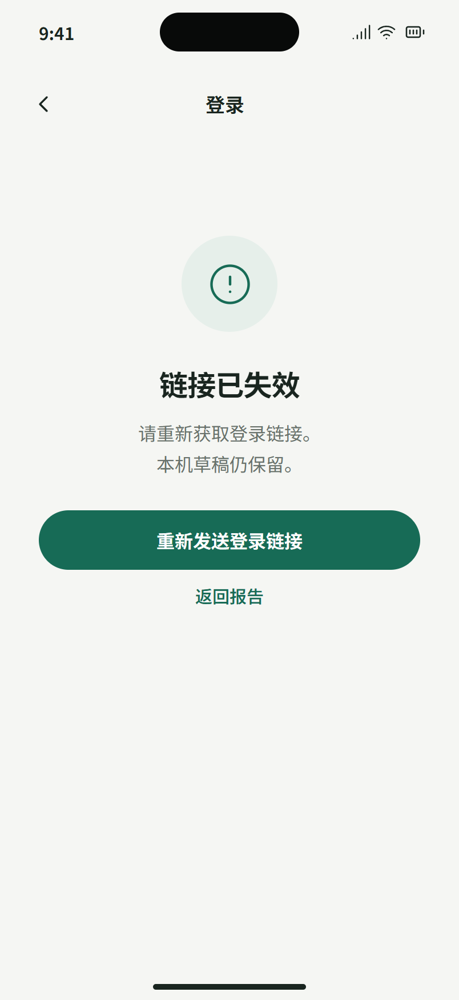
E04 · 登录回调 / 链接失效
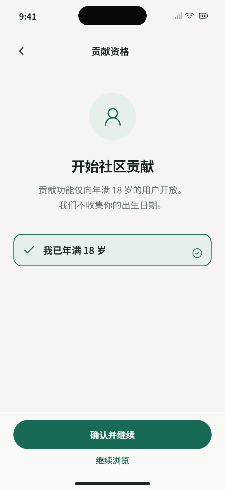
E05 · 贡献资格 / 一次确认
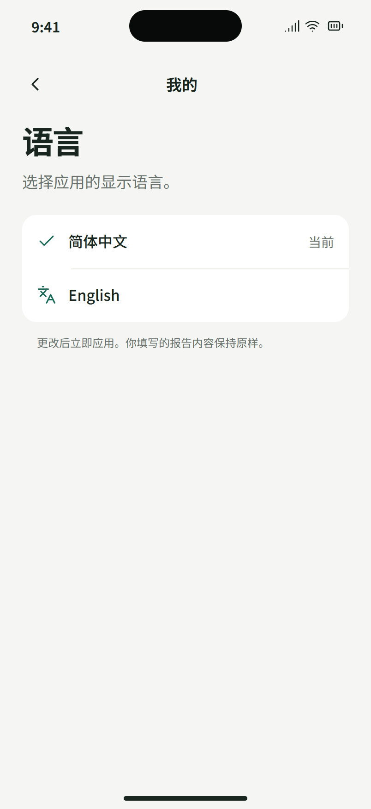
E06 · 语言 / 系统分组选择
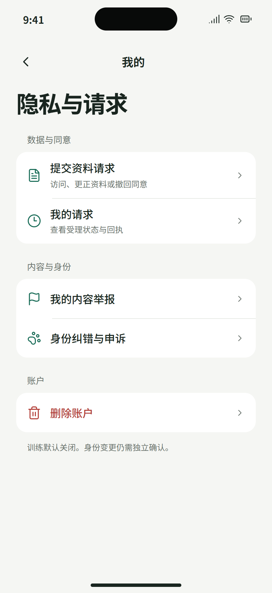
E07 · 隐私与请求 / 入口页
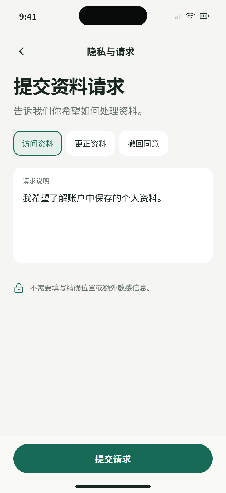
E08 · 资料请求 / 选择与说明
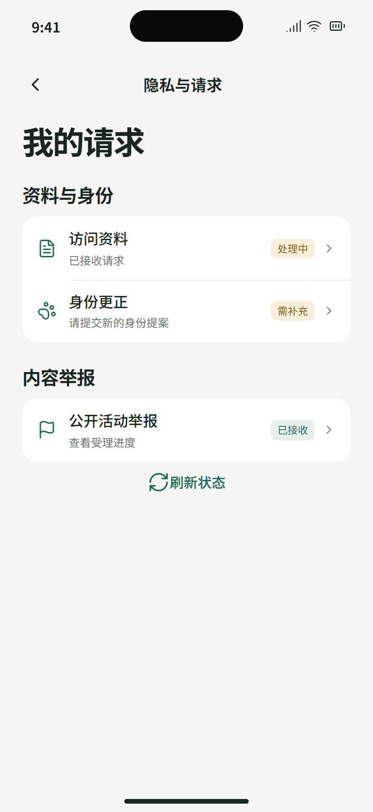
E09 · 我的请求 / 状态列表
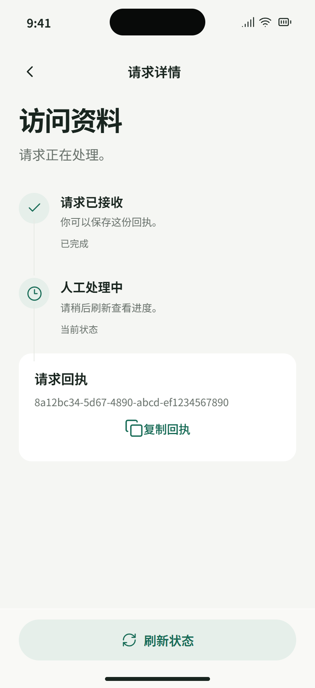
E10 · 请求详情 / 回执与进度
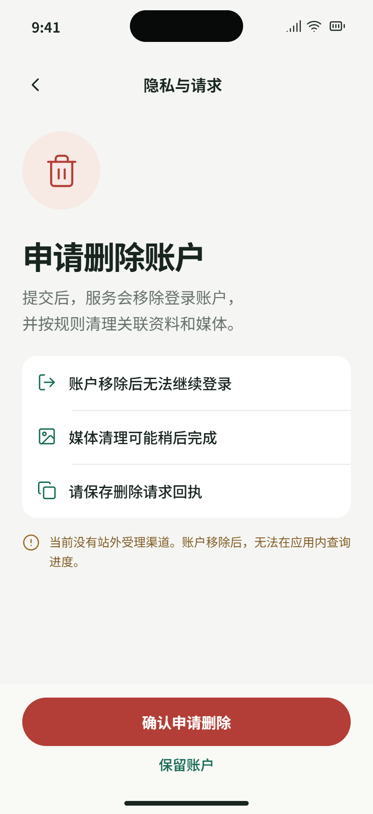
E11 · 删除账户 / 明确后果
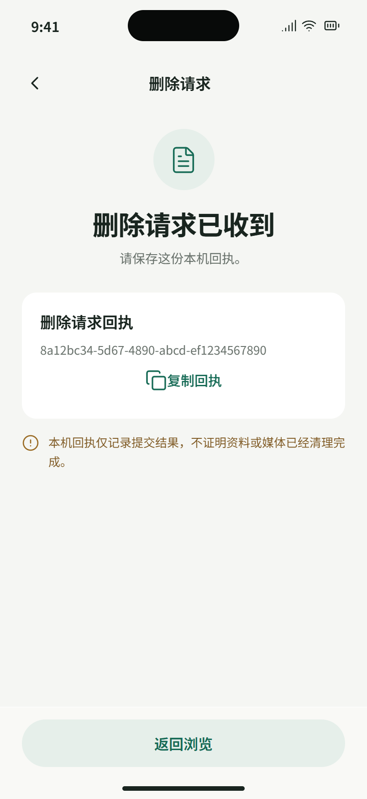
E12 · 删除回执 / 退出后保留
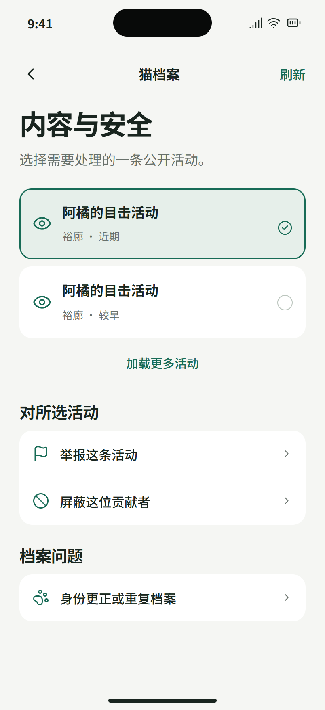
E13 · 内容安全 / 选择活动
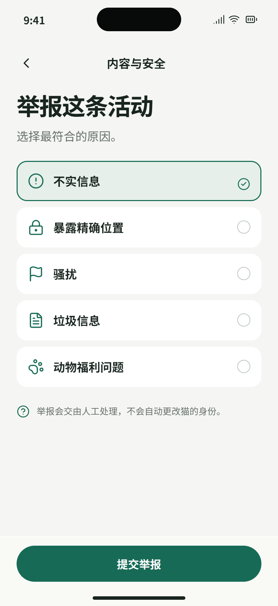
E14 · 内容举报 / 理由选择
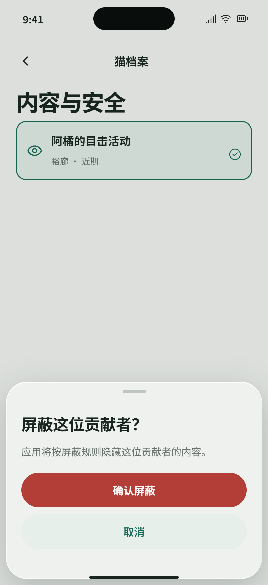
E15 · 屏蔽贡献者 / 确认
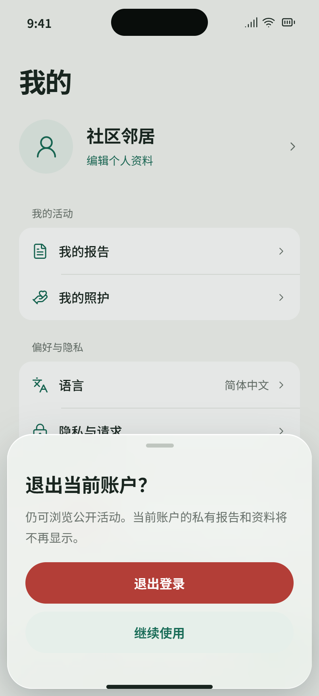
E16 · 退出账户 / 账户操作
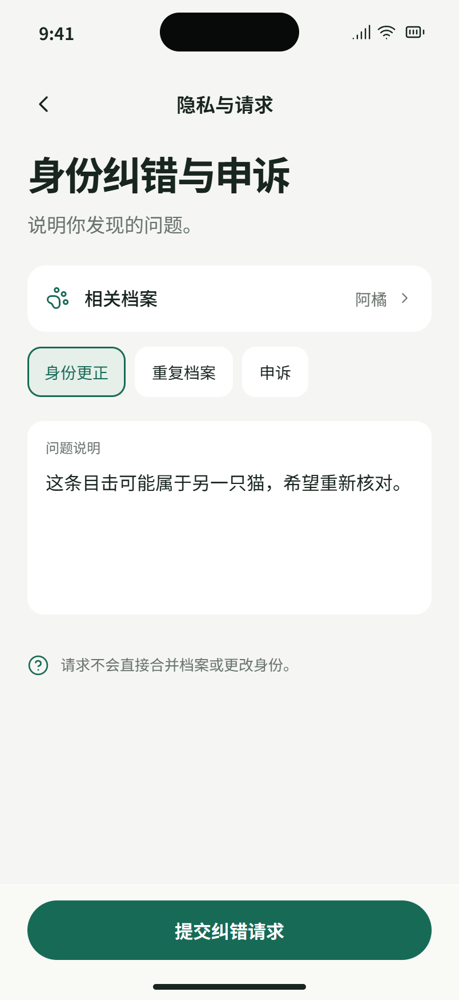
E17 · 身份纠错 / 档案请求
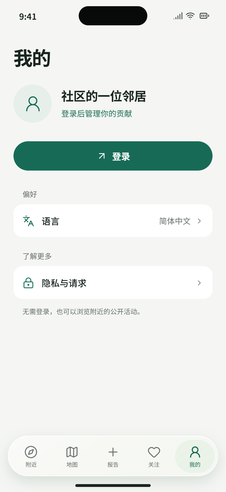
E18 · 个人中心 / 未登录
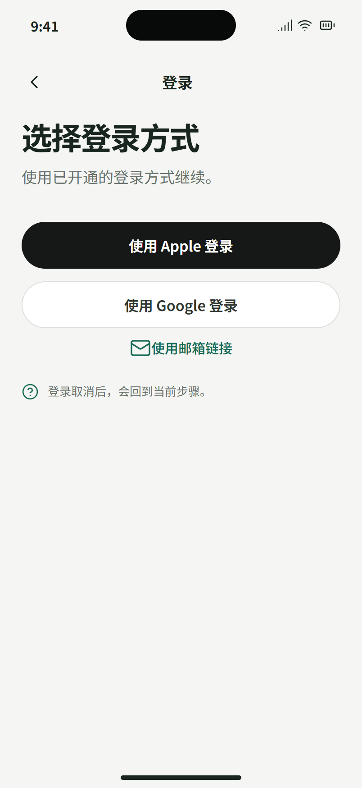
E19 · 其他登录方式 / 配置后展示